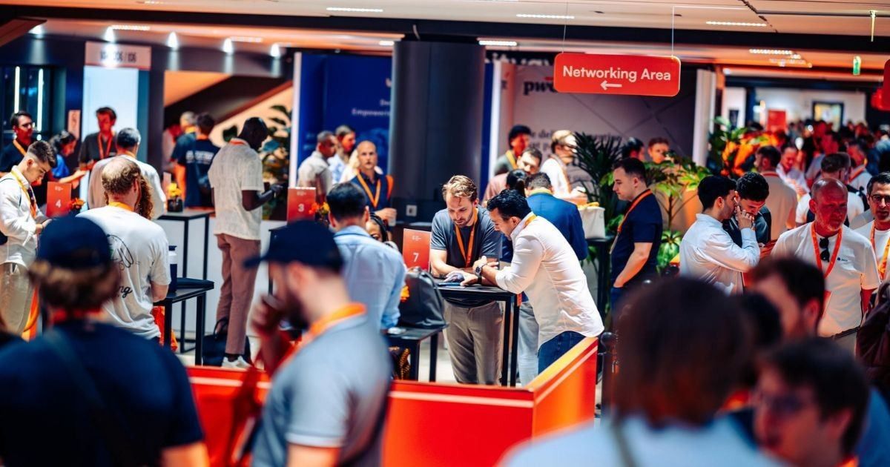

Conferences · Crypto / Web3
Dutch Blockchain Week 2027
- Dates
- –
- Venue
- Johan Cruijff ArenA, Amsterdam (main summit, 19–20 May)
- Location
- Amsterdam, Netherlands
- Format
- In-person
- Category
- Crypto / Web3
- Industry
- Digital assets and blockchain week
- Organiser
- Dutch Blockchain Week
- Official website
- https://dutchblockchainweek.com/
About
The official week runs 17–23 May 2027; the main DBW Summit is 19–20 May at the Johan Cruijff ArenA. Included as a crypto/web3 conference, not as a finance trade show. Dates are local to the host city (Central European Time, UTC+1 / UTC+2 in summer).
Topics: blockchain, digital assets, web3, finance technology.
No organiser attendance figure found on the official pages fetched 24 Nov 2026. Ranked by our estimated size tier 'medium' (10,000-30,000 attendees/visits), a judgement from format, venue and scale, not an official number.
Sources
- Official — https://dutchblockchainweek.com/
Venue
- Johan Cruijff ArenA — Venue · Amsterdam, Netherlands